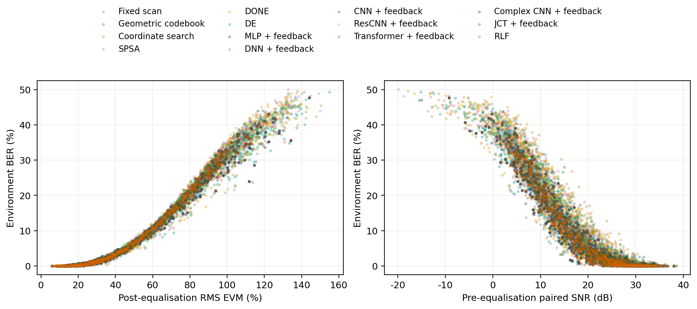
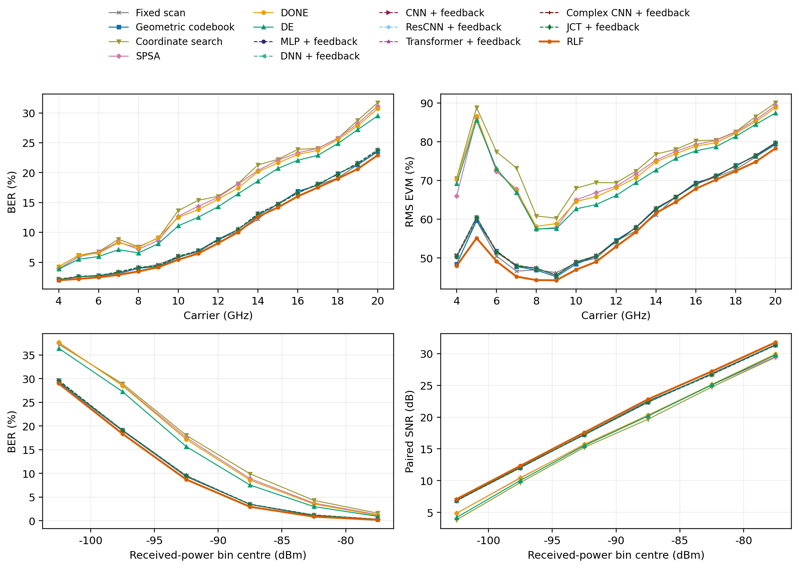
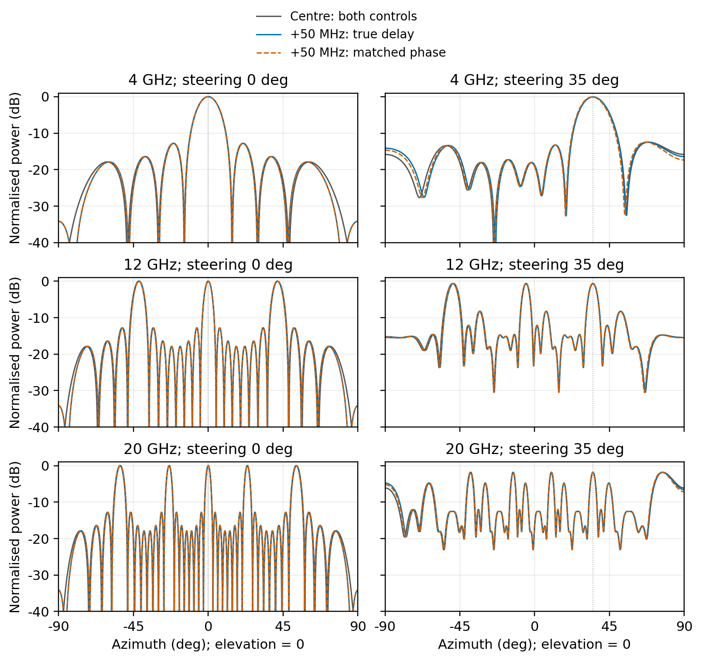
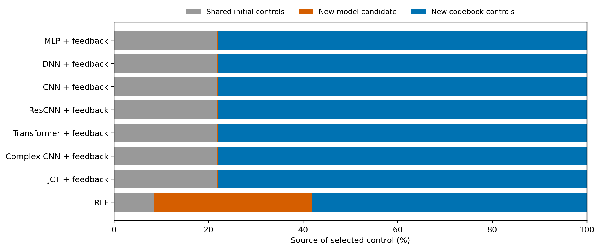
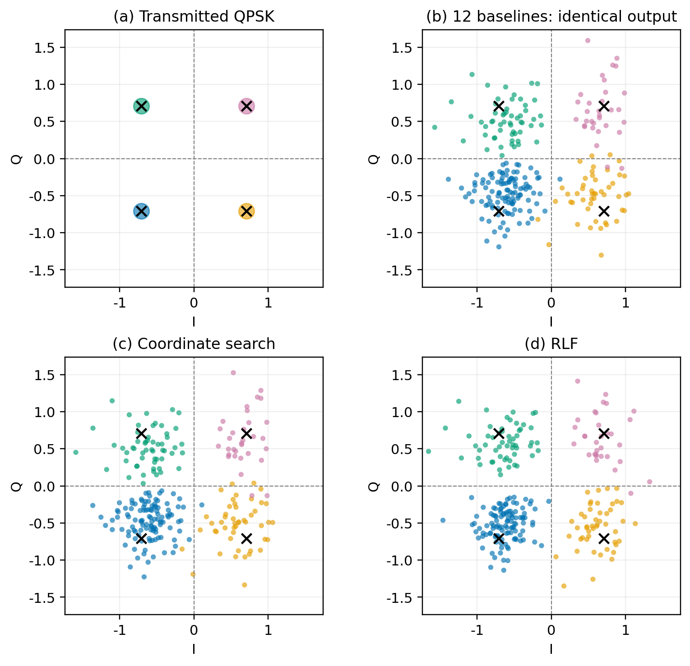
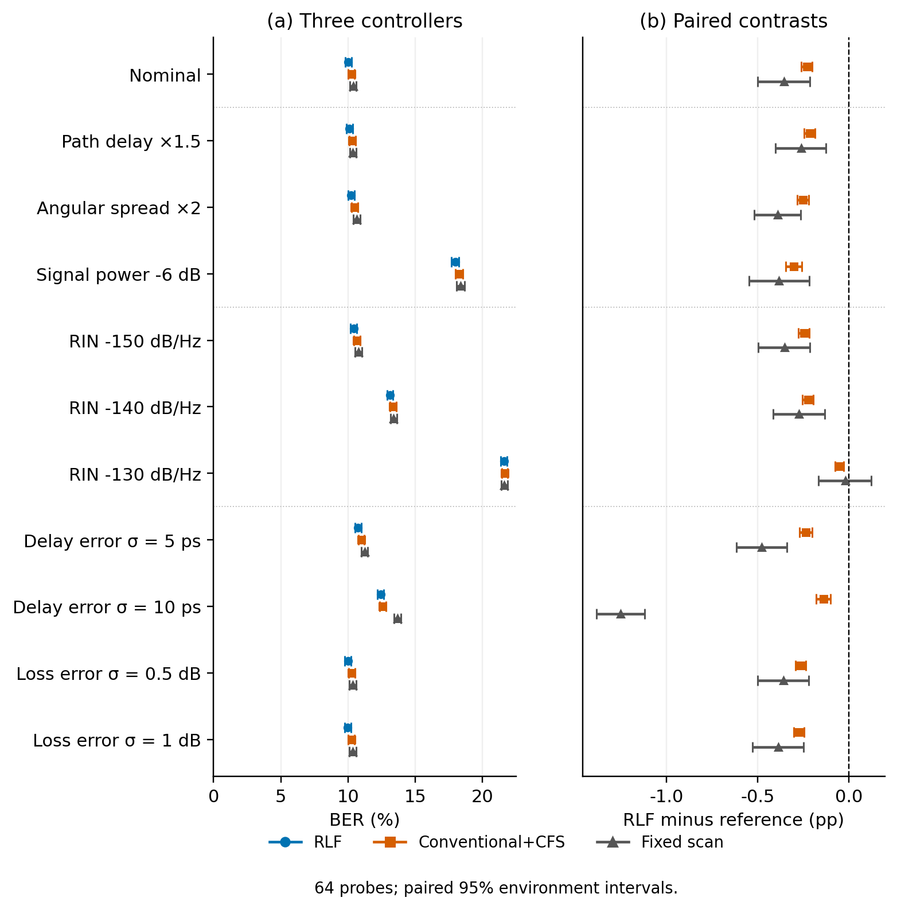
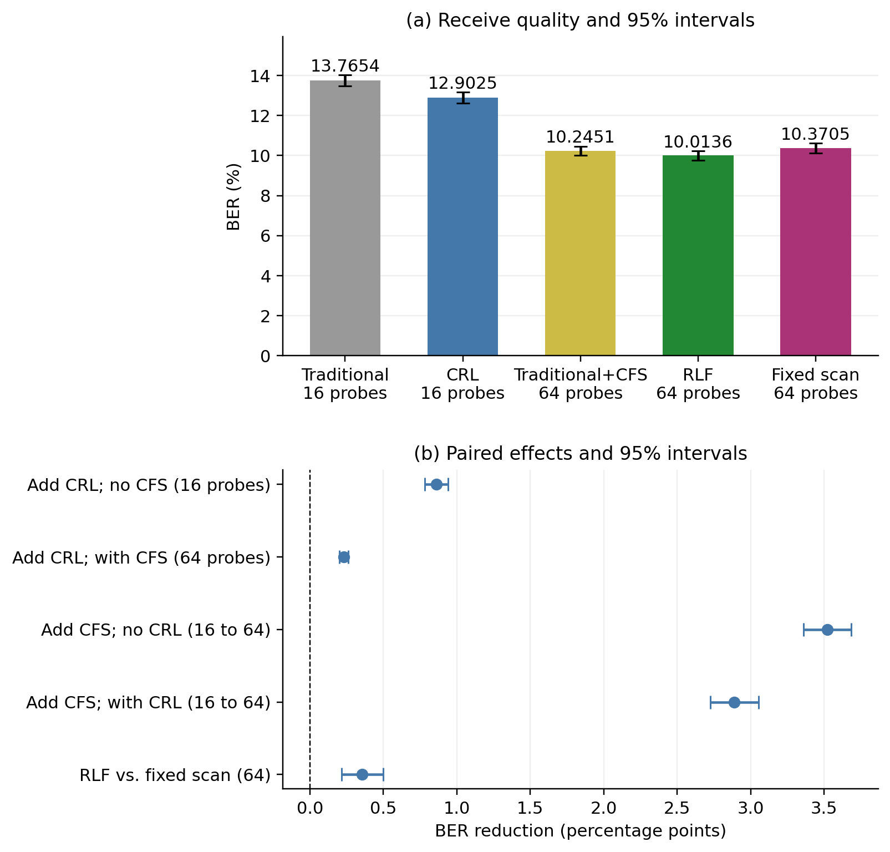
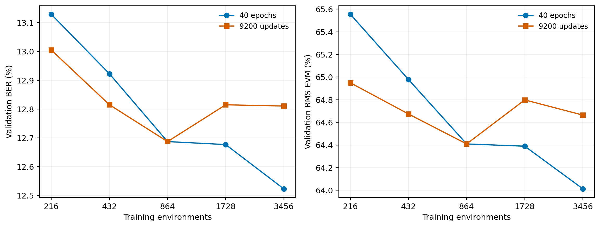

输入来自冻结结果；图号对应当前论文。
fig:metric-relations
EN PDFEN PNG ZH PDFZH PNG
fig:frequency
EN PDFEN PNG ZH PDFZH PNG
fig:array-phase
EN PDFEN PNG ZH PDFZH PNG
fig:selection-origins
EN PDFEN PNG ZH PDFZH PNG
fig:rq1-constellation
EN PDFEN PNG ZH PDFZH PNG
fig:rq1-sensitivity
EN PDFEN PNG ZH PDFZH PNG
fig:rq2-af
EN PDFEN PNG ZH PDFZH PNG
fig:rq3-training
EN PDFEN PNG ZH PDFZH PNG